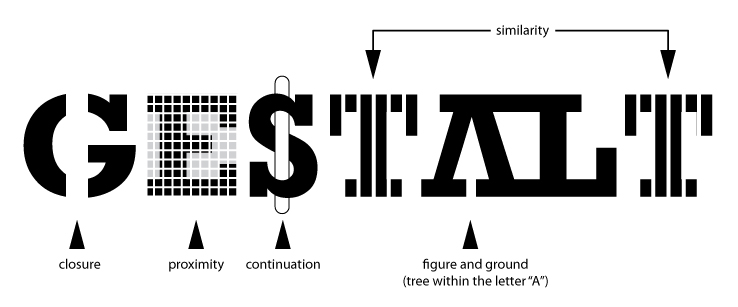

Gestaltlovene
Gestaltlovene stammer fra gestaltpsykologien, der fokuserer på menneskets perception af objekter, hændelser og fænomener. Når det handler om at skabe et godt design, er det vigtigt at have gestaltlovene in mente, da de er med til at afgøre, hvordan et design opfattes.
Figure-ground
Figure-ground relationen er et udtryk for, hvordan vi som mennesker skelner mellem figure (forgrund) og ground (baggrund). Der vil altid være en forgrund og en baggrund i en grafisk komposition, da der altid vil være noget, som er i fokus og noget, der står i dets baggrund.
Simplicity
Simplicity handler om, at hjernen skaber en sammenhæng mellem enkeltstående objekter, der på egen hånd ikke vil give nogen mening.
White space
White space er et vigtigt begreb indenfor webdesign. Det giver luft til det vigtige indhold på siden. Det kan være farver eller et simpelt mønster, men det kan også være billeder – så længe de ikke tager fokus fra det vigtige indhold på siden.
Common fate
Common fate er udtrykket for at elementer, der opfører sig på samme måde (f.eks. bevægelse eller retning) opfattes som hørende sammen. Måden vi opfatter common fate på er meget instinktivt. Det er noget, vi altid har gjort, og det ligger derfor dybt i vores underbevidsthed.
Proximity
Vi opfatter elementer, der er hinanden nærtstående, som værende i samme gruppe. Det er derfor muligt at skabe blandt andet kompositioner ud fra en samling af figurer, og fordi vi opfatter dem som sammenhørende, synes vi at kunne se et billede.
Rule of thirds
Ved at dele billeder op i 1/3 dele kan der skabes mere harmoniske opsætninger. Der er to horisontale og to vertikale linjer samt 4 skæringspunkter dannet ud fra linjerne. Når elementer i en komposition lægges på skæringspunkterne eller linjerne, opstår det harmoniske billede.
Similarity
Similarity er ligheder i et billede, tekst, hjemmeside osv. Lighederne skaber en rød tråd gennem hele designet, og det kan derfor hjælpe brugeren med lettere at aflæse tekst, billeder osv. i en helt bestemt rækkefølge.
Symmetry
Vi opfatter symmetriske elementer som værende i samme gruppe. Der er ikke nødvendigvis tale om en decideret spejling af indhold, men det bidrager til det æstetiske og brugevenligheden at have symmetriske elementer i eksempelvis et webdesign.
Closure
Closure opstår, når vi ser en komplet figure, selvom noget af indholdet eller nogle af informationerne mangler. Det vil sige, at vi kan skabe et billede ud fra enkeltstående objekter.
Golden section
I forhold til webdesign kan det siges at være en figur for vores perception af et site. Typisk vil logoet hvile den gyldne spirals udspring, og så kommer det resterende indhold. Det betyder, at som afstanden til udspringet øges, jo mindre vigtigt vil indholdet være for os som brugere.